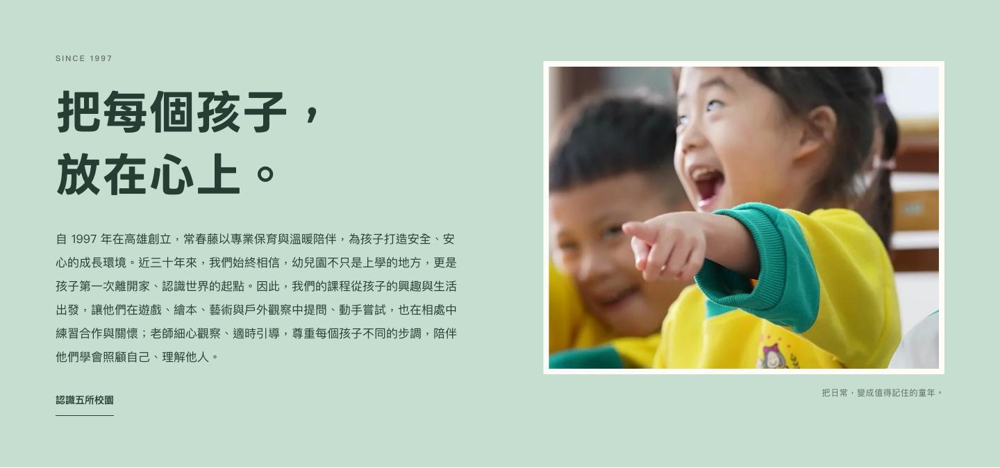
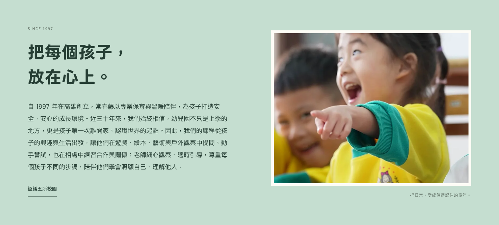
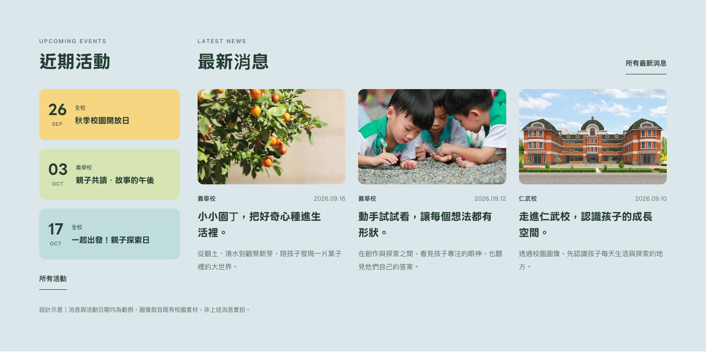
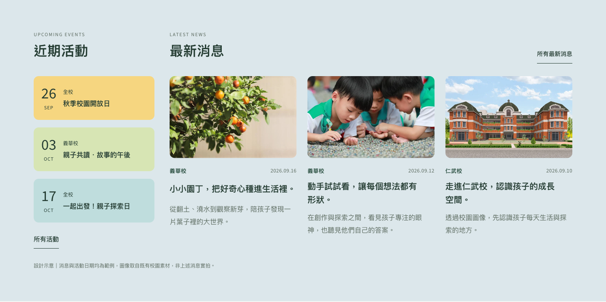

01 理念與內文
保留 LINE Seed 的親切感，收斂標語字級、放大內文。


02 活動與消息
資訊標題使用黑體 600，日期用較輕的數字，內容層次更明確。


品牌有個性，校名有氣質，資訊更好讀。
保留 LINE Seed 的親切感，收斂標語字級、放大內文。


資訊標題使用黑體 600，日期用較輕的數字，內容層次更明確。


相同內容、配色、照片與節錄版型的字體比較。首頁主標與分校明體校名保留；獨立 mock-up，尚未套用至正式官網。